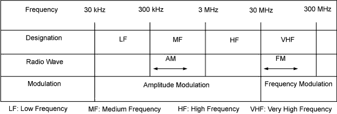
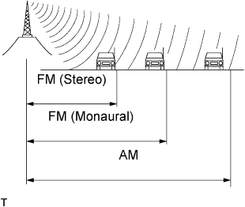
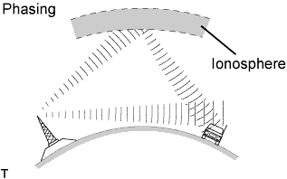
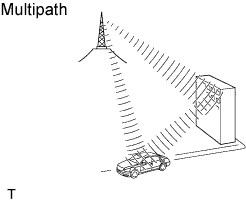
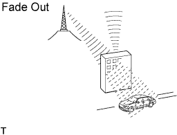

AUDIO AND VISUAL SYSTEM (w/ Multi-display) > IDENTIFICATION OF NOISE SOURCE |
| RADIO WAVE BAND |
Radio frequency band
Radio broadcasts use the radio frequency bands shown in the table below.

| SERVICE AREA |
 |
The broadcast range for AM and FM is very different. Sometimes an AM broadcast can be received very clearly but FM stereo cannot.
FM stereo has the smallest service area, and is prone to picking up static and other types of interference (for example, noise).
| RECEPTION PROBLEMS |
 |
AM broadcasts are susceptible to electrical interference called phasing. Occurring only at night, phasing is the interference created when a vehicle receives 2 radio wave signals from the same transmitter. One signal is reflected off of the ionosphere and the other signal is received directly from the transmitter.
 |
Multipath is a type of interference created when a vehicle receives 2 radio wave signals from the same transmitter. One signal is reflected off of buildings or mountains and the other signal is received directly from the transmitter.
 |
Fade out is caused by objects (buildings, mountains, etc.) that deflect away part of a signal, resulting in a weaker signal when the object is between the transmitter and vehicle. High frequency radio waves, such as FM broadcasts, are easily deflected by obstructions. Low frequency radio waves, such as AM broadcasts, are much more difficult to deflect.
| NOISE PROBLEMS |
Technicians must have a clear understanding about the noise problems of the vehicle of the customer. Use the following table to diagnose the problems.
| Radio Wave | Condition in Which Noise Occurs | Presumable Cause |
| AM | Noise occurs in a specific area | Strong possibility of foreign noise |
| AM | Noise occurs when broadcasting is weak |
|
| AM | Noise occurs only at night | Strong possibility of beats from distant broadcasting |
| FM | Noise occurs at a specific place during driving | Strong possibility of multipath noise and fading noise caused by changes of FM frequency |